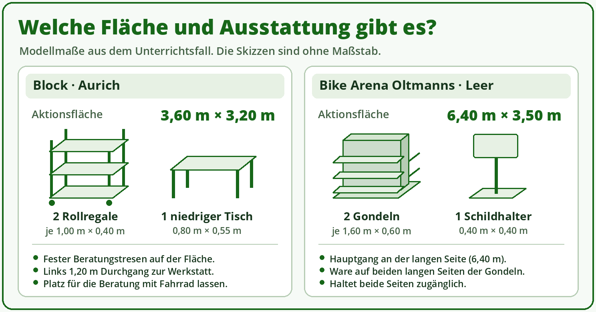

M3 – Flächen und Warenträger


Ein Maßstab hilft beim Verkleinern. Zum Beispiel steht bei 1:20 ein Zentimeter im Plan für 20 Zentimeter im Laden. Haltet die genannten Gänge und Zugänge frei. Das ist eine zwingende Anforderung.
| Standort | Verfügbare Aktionsfläche | Umgebung und Ausstattung |
|---|---|---|
| Block | 3,60 m × 3,20 m. Der feste Beratungstresen steht auf dieser Fläche. | Links verläuft ein 1,20 m breiter Hauptdurchgang zum Werkstattzugang. Ihr habt zwei Rollregale (je 1,00 m × 0,40 m) und einen niedrigen Tisch (0,80 m × 0,55 m). Lasst Platz für die Beratung mit einem Fahrrad. |
| Bike Arena | Die Fläche ist rechteckig und misst 6,40 m × 3,50 m. | Der Hauptgang verläuft an der 6,40-m-Seite. Ihr habt zwei Gondeln (je 1,60 m × 0,60 m). Die Ware steht dort auf beiden Seiten. Dazu gibt es einen freistehenden Schildhalter (0,40 m × 0,40 m). |
Skizzenhilfe für die beiden Ladenflächen. Zeichnet pro Laden ein Rechteck für die Aktionsfläche. Nutzt je ein A4-Blatt im Querformat und den Maßstab 1:25. Ein Zentimeter auf dem Blatt steht für 25 Zentimeter im Laden. Zeichnet die breite Seite waagerecht.
- Block. Zeichnet links neben die Aktionsfläche den 1,20 m breiten Durchgang. Markiert am oberen Ende den Werkstattzugang. Zeichnet den festen Tresen rechts unten in die Aktionsfläche. Er ist 1,20 m breit und 0,70 m tief.
- Bike Arena. Zeichnet den 1,50 m breiten Hauptgang unter die lange Seite der Aktionsfläche. Markiert den Zugang links am Gang.